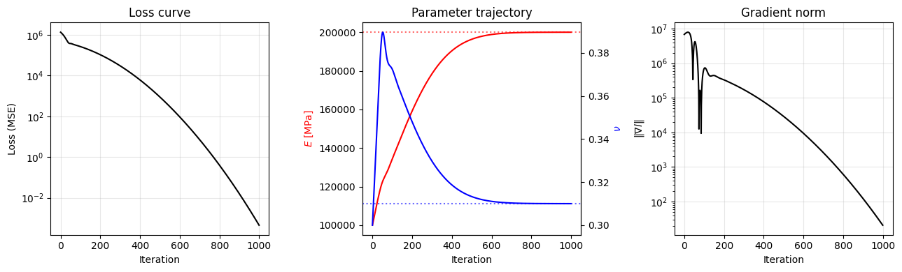

Parameter calibration¶
The previous tutorial, Automatic differentiation, showed how
to read the gradient of a NEML2 model’s output with respect to its
parameters. That gradient is the only ingredient an off-the-shelf
torch.optim optimizer needs. This tutorial closes the loop: define a
loss against observations, step a real optimizer, and watch the
parameters converge back to their true values.
Problem setup¶
We calibrate the elastic moduli of a linear isotropic material from strain/stress observations. The model is parameterized by Young’s modulus \(E\) and Poisson’s ratio \(\nu\):
%%writefile input.i
[Models]
[elasticity]
type = LinearIsotropicElasticity
coefficient_types = 'YOUNGS_MODULUS POISSONS_RATIO'
coefficients = '100e3 0.30'
[]
[]
Writing input.i
The starting guess in the file (\(E = 100\,000\) MPa, \(\nu = 0.30\)) is deliberately far from the “true” values we’ll synthesize the data from — that’s the gap the optimizer has to close.
Synthetic observations¶
Calibrating against synthetic data — where the answer is known by construction — is the standard way to debug a calibration pipeline before we point it at a real experiment. We load the same input twice: once as the truth model (with the parameters fixed to the target values), once as the trainee model (with the perturbed starting guess from the input file).
import torch
import neml2
from neml2.types import SR2
torch.set_default_dtype(torch.float64)
torch.manual_seed(0)
# Ground-truth parameters
E_true = 200e3 # MPa
nu_true = 0.31
truth = neml2.load_model("input.i", "elasticity")
with torch.no_grad():
truth.E.data.fill_(E_true)
truth.nu.data.fill_(nu_true)
# 32 random strain samples at the 1% level
N = 32
strain_obs = SR2(0.01 * torch.randn(N, 6))
with torch.no_grad():
stress_obs = truth(strain_obs)
print("observation shape:", stress_obs.data.shape)
observation shape: torch.Size([32, 6])
The mutation pattern (truth.E.data.fill_(...) inside torch.no_grad())
is the in-place version covered in Model parameters — it
keeps the same nn.Parameter slot. The trainee model, loaded next,
gets a fresh set of parameters at the file’s defaults.
Loss function¶
The mean squared error between predicted and observed stress is a standard choice — it’s smooth, convex in the prediction, and easy to differentiate:
In code:
model = neml2.load_model("input.i", "elasticity")
print(f"initial guess: E = {model.E.data.item():.3e}, nu = {model.nu.data.item():.3f}")
with torch.no_grad():
initial_loss = ((model(strain_obs).data - stress_obs.data) ** 2).mean()
print(f"initial loss = {initial_loss.item():.3e}")
initial guess: E = 1.000e+05, nu = 0.300
initial loss = 1.342e+06
The initial loss is large because the trainee’s \(E\) is wrong by a factor of two.
Optimizer choice and conditioning¶
NEML2 parameters are leaf nn.Parameter tensors, so any optimizer in
torch.optim works. We use torch.optim.Adam here.
There is one subtlety. \(E\) lives at \(\mathcal{O}(10^5)\) and \(\nu\) at
\(\mathcal{O}(0.3)\) — almost six orders of magnitude apart. A single
scalar learning rate that’s large enough to move \(E\) will catapult
\(\nu\) out of its valid range, and a learning rate small enough for
\(\nu\) leaves \(E\) effectively frozen. The fix is to give each parameter
its own learning rate via torch.optim’s param-group mechanism,
roughly scaled to the parameter’s magnitude:
optimizer = torch.optim.Adam(
[
{"params": [model.E.data], "lr": 5e2}, # 0.5% of E
{"params": [model.nu.data], "lr": 2e-3}, # 0.7% of nu
]
)
Tip
This is the calibration-specific face of a general truth in gradient-based optimization: parameters of wildly different magnitudes need either per-parameter step sizes or an explicit change of variables (e.g. optimizing \(\log E\) instead of \(E\)). Adam’s moment-based normalization helps but does not fully remove the sensitivity.
Calibration loop¶
The loop is the standard PyTorch idiom: zero the gradients, forward, compute the loss, backward, step. We record the loss, the parameter values, and the gradient norm at every iteration so we can diagnose afterwards.
n_iter = 1000
loss_hist, E_hist, nu_hist, gradnorm_hist = [], [], [], []
for i in range(n_iter):
optimizer.zero_grad()
stress_pred = model(strain_obs)
loss = ((stress_pred.data - stress_obs.data) ** 2).mean()
loss.backward()
# Record diagnostics *before* the step, so the gradient corresponds
# to the parameter values in the history.
gn = torch.sqrt(model.E.data.grad.pow(2) + model.nu.data.grad.pow(2)).item()
loss_hist.append(loss.item())
E_hist.append(model.E.data.item())
nu_hist.append(model.nu.data.item())
gradnorm_hist.append(gn)
optimizer.step()
print(f"final loss = {loss_hist[-1]:.3e}")
print(f"recovered E = {model.E.data.item():.4f} (true {E_true})")
print(f"recovered nu = {model.nu.data.item():.6f} (true {nu_true})")
final loss = 4.542e-04
recovered E = 199997.4335 (true 200000.0)
recovered nu = 0.310002 (true 0.31)
Both parameters are recovered to within a small fraction of a percent. With noise-free synthetic data and many random strain directions, the loss landscape here has a unique global minimum at the true values where the loss is exactly zero; the residual error is set by the optimizer’s tolerance rather than the data.
Diagnostics¶
Three plots almost always tell us whether a calibration is healthy.
from matplotlib import pyplot as plt
it = list(range(n_iter))
fig, axes = plt.subplots(1, 3, figsize=(13, 4))
# (1) Loss curve
axes[0].semilogy(it, loss_hist, "k-")
axes[0].set_xlabel("Iteration")
axes[0].set_ylabel("Loss (MSE)")
axes[0].set_title("Loss curve")
axes[0].grid(alpha=0.3)
# (2) Parameter trajectory
axes[1].plot(it, E_hist, "r-", label=r"$E$")
axes[1].axhline(E_true, color="r", ls=":", alpha=0.6)
ax1b = axes[1].twinx()
ax1b.plot(it, nu_hist, "b-", label=r"$\nu$")
ax1b.axhline(nu_true, color="b", ls=":", alpha=0.6)
axes[1].set_xlabel("Iteration")
axes[1].set_ylabel(r"$E$ [MPa]", color="r")
ax1b.set_ylabel(r"$\nu$", color="b")
axes[1].set_title("Parameter trajectory")
# (3) Gradient norm
axes[2].semilogy(it, gradnorm_hist, "k-")
axes[2].set_xlabel("Iteration")
axes[2].set_ylabel(r"$\|\nabla l\|$")
axes[2].set_title("Gradient norm")
axes[2].grid(alpha=0.3)
fig.tight_layout()
plt.show()

What to look for in each panel:
Loss curve. A healthy run shows monotone (or near-monotone) decrease on a log scale, with curvature flattening as the optimum is approached. A plateau early on usually means the learning rate is too small; oscillations or divergence mean it’s too large. A loss that stalls at a non-zero value when synthetic data should be exactly fittable points at a mis-specified model.
Parameter trajectory. Dotted reference lines mark the truth. Both curves should approach their dotted line and stay there. A parameter that drifts past the truth and then returns is fine — Adam’s momentum routinely overshoots and corrects. A parameter that doesn’t move at all (flat trajectory) usually has a near-zero gradient — either because the loss is genuinely insensitive to it (non-identifiability — see below) or because the learning rate for that param group is too small.
Gradient norm. Should decrease alongside the loss. If the loss keeps drifting down while the gradient norm plateaus, we are usually watching one parameter that has nearly converged while the other still has a noticeable gradient — the plateau is the small parameter’s contribution dominating the norm.
Common failure modes¶
A few patterns to recognize when calibrating real models:
Bad conditioning. Parameters with very different magnitudes (the \(E\)/\(\nu\) situation above) or very different sensitivities cause Adam to under- or overshoot in different directions. Fixes: per- parameter learning rates via
param_groups(used here), reparameterize to bring magnitudes closer (e.g. optimize \(\log E\)), or precondition the optimizer.Non-identifiable parameters. If the observations don’t contain information about a parameter, no amount of optimization will pin it down. The classic symptom is a parameter that doesn’t move and a loss that’s already nearly minimal at the (wrong) initial value. For elasticity parameterized by bulk and shear moduli \((K, G)\), pure hydrostatic loading carries no information about \(G\), so a calibrator given only volumetric data will leave \(G\) at its starting guess. (With the \(E/\nu\) parameterization used above, \(\nu\) enters both \(K\) and \(G\), so hydrostatic data still pins it down, but the calibration is poorly conditioned.) Fix: add observations that probe the insensitive direction, or fix the unidentifiable parameter from prior knowledge.
Local minima. Non-convex loss landscapes (very common with rate-dependent or path-dependent models) can trap gradient descent in a basin that’s not the global optimum. Fixes: multi-start from different initial guesses, or hybrid global/local optimizers outside
torch.optim.Vanishing gradients. When the loss is near machine precision (synthetic data, late iterations) the gradient is dominated by numerical noise. Don’t chase iterations past the floor — relative improvement of \(10^{-6}\) or so per step is usually the signal to stop.
Note
torch.optim provides several alternatives to Adam — SGD with
momentum, RMSProp, and the line-search-based
torch.optim.LBFGS. LBFGS converges in many fewer steps on
smooth, well-conditioned problems, but doesn’t support the
per-parameter learning rates used above, so it’s the wrong tool until
we’ve reparameterized to bring all parameters to similar scales. For
two-parameter elastic calibration of the kind shown here, Adam is the
simpler choice; for higher-dimensional calibration of smooth
constitutive models, LBFGS is often the right tool once we’ve
reparameterized to unit scale.
Where to go next¶
Calibrating a transient model (one that integrates a load history step by step) requires backpropagating through the time-stepping loop. The
pyzagadapter handles that efficiently — see Recurrent calibration with pyzag.The mechanics of reading, mutating, and freezing parameters are covered in Model parameters; the advanced patterns (parameters supplied by other models, parameters promoted to inputs) live in Model parameters revisited.